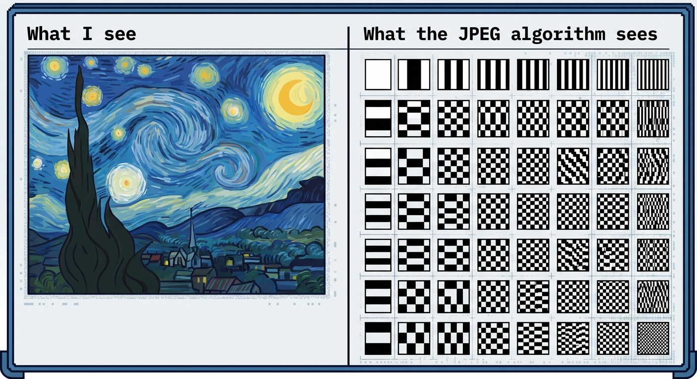

Decoding the Frequency Grid
Introduction
Welcome back! In the previous lesson, we established that images, just like audio, are made of waves. But unlike a sound wave that just wiggles up and down over time, an image wiggles across space—horizontally and vertically.
The Periodic Table of Images
Now that we know images have frequencies, how do we map them? If you were painting, you’d have a palette of colors. In the world of JPEG and image processing, we have a palette of patterns.
Specifically, we break the image down into tiny 8x8 pixel blocks. Mathematicians discovered that you can recreate any possible 8x8 pixel block by mixing together combinations of just 64 specific base patterns.
Think of this 8x8 grid as the 'Periodic Table of Image Elements'.

To a computer, a beautiful landscape or a selfie isn't a collection of objects; it's just a weighted list of these 64 checkerboards.
Exploring the Basis Functions
Let's get hands-on with this grid. It's not random; it is sorted by frequency.
Basis Function (0, 0)
Hover over the grid to explore.
Notice the trend? The top-left is the DC Component. It represents zero frequency—just a flat, solid color representing the average brightness of the block. As you move right, the vertical stripes get tighter (higher horizontal frequency). As you move down, the horizontal stripes get tighter (higher vertical frequency).
The bottom-right corner represents the highest energy diagonal changes—the finest details and sharpest noise.
Check Your Understanding
If you have a block of pixels that is perfectly grey with no texture or variation, which basis function is the only one you need to recreate it?
The Mathematical Recipe
So how do we actually build an image from these tiles? It's a recipe. We take a little bit of this pattern, a lot of that pattern, and subtract a bit of another.
Mathematically, an 8x8 image block \( I(x,y) \) is the weighted sum of all basis functions \( B_{u,v}(x,y) \).
The equation looks scary, but it's just a sum:
Here's what that means:
- \( C(u,v) \): The Coefficient. This is the 'weight' or amount of the ingredient. If this number is large, that specific pattern is very strong in the image block.
- \( B_{u,v}(x,y) \): The Basis Function. The specific pattern from the grid we just looked at.
We calculate this for every pixel \( (x,y) \) by summing up the contribution of all 64 patterns.
Stop and Think
The coefficients \( C(u,v) \) can be negative numbers. Why would we need a 'negative' amount of a pattern?
Frequency Domain Filtering
Here is why this matters: Once we have the 'recipe' (the coefficients), we can change the image by changing the recipe before we cook it (transform it back to pixels).
This is called Filtering. We can choose to delete specific ingredients.
1. Low-Pass Filter (Blurring)
If we keep the low frequencies (top-left) and delete the high frequencies (bottom-right), we keep the general shape and color, but lose the sharp edges. The image gets blurry.
2. High-Pass Filter (Edge Detection)
If we do the opposite—delete the DC component and low frequencies, but keep the high frequencies—we lose the smooth colors and are left only with the sharp changes. The image looks like a sketch.
Try it yourself on this image of a cat:
Build Your Vocab
Basis Function
The fundamental building block patterns (cosine waves) used to construct an image in the frequency domain. In JPEG, there are 64 of them for each 8x8 block.
Build Your Vocab
DC Component
The coefficient at position (0,0) in the DCT grid. It represents the average intensity (brightness) of the entire pixel block. It stands for 'Direct Current', a borrowed term from electronics.
Low-Pass Filter
A filter that allows low-frequency signals (smooth gradients) to pass through while reducing or eliminating high-frequency signals (fine details), resulting in a blurred image.
Common Questions
Why do we always talk about 8x8 blocks? Why not transform the whole image at once?
Great question! Two reasons:
- Computation: Calculating the DCT for a massive 12-megapixel image all at once requires a huge amount of processing power. Breaking it into small 8x8 tiles makes it very fast.
- Local Variation: Images change a lot from one corner to the other. By looking at small blocks, we can adapt to the specific details in that tiny area (like a sharp edge in one block vs. a blue sky in another).
Test Your Knowledge
In the 8x8 DCT grid, where would you find the coefficients responsible for the finest details, such as the texture of hair or grain of sand?
Test Your Knowledge
If you apply a High-Pass filter to an image (removing the DC component and low frequencies), what will the resulting image look like?
Review and Reflect
We've now successfully decoded the frequency grid. We learned that an image isn't just a grid of pixels; it's a sum of waves.
Summary of what we learned:
- The Grid: Every 8x8 block of an image can be built from 64 specific cosine patterns.
- The Layout: Low frequencies live in the top-left, and high frequencies (details) live in the bottom-right.
- The Power: By selectively removing these frequencies, we can blur an image or extract its edges.
But why is this useful for compression? Hint: Your eyes aren't very good at seeing those high-frequency patterns in the bottom-right corner. In the next lesson, we're going to see what happens when we simply throw them away.